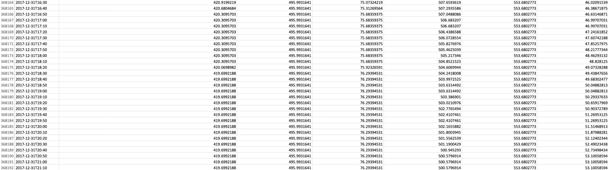

Es war ein frostiger Januar im Jahr 1998, als eine gewöhnliche Fichte zu einer aussergewöhnlichen wurde. Wissenschaftler:innen der Eidgenössischen Forschungsanstalt für Wald, Schnee und Landschaft (WSL) befestigten ein Dendrometer, ein Messgerät für das Baumwachstum, an einer Fichte im Davoser Versuchswald. Täglich, alle zehn Minuten, werden Daten gemessen und in einer riesigen Datenbank gesammelt. Mithilfe dieser Daten ist es möglich, das Wachstum von «Tree 1» mit der herrschenden Temperatur, dem Wasserstress, der Luftfeuchtigkeit oder anderen Faktoren in Beziehung zu setzen. Durch die Visualisierung im 3D-Raum und anschliessendem 3D-Druck wurden diese Daten erlebbar gemacht. So entstanden zwei einzigartige Datenskulpturen, die das Baumwachstum der letzten 20 Jahre darstellen.
Ein besonderes Fundstück aus dem Wald – ein Holzstück mit faseriger Struktur – inspirierte uns dazu, das Datenmodell in eine ähnliche Form zu bringen. Die grösste Herausforderung bestand darin, die fast sechs Millionen Datenpunkte zu analysieren. Trotz der Belastung für Rechner und Nerven war es äusserst befriedigend zu sehen, wie aus einer Flut von Zahlen eine verständliche Struktur entstand.
